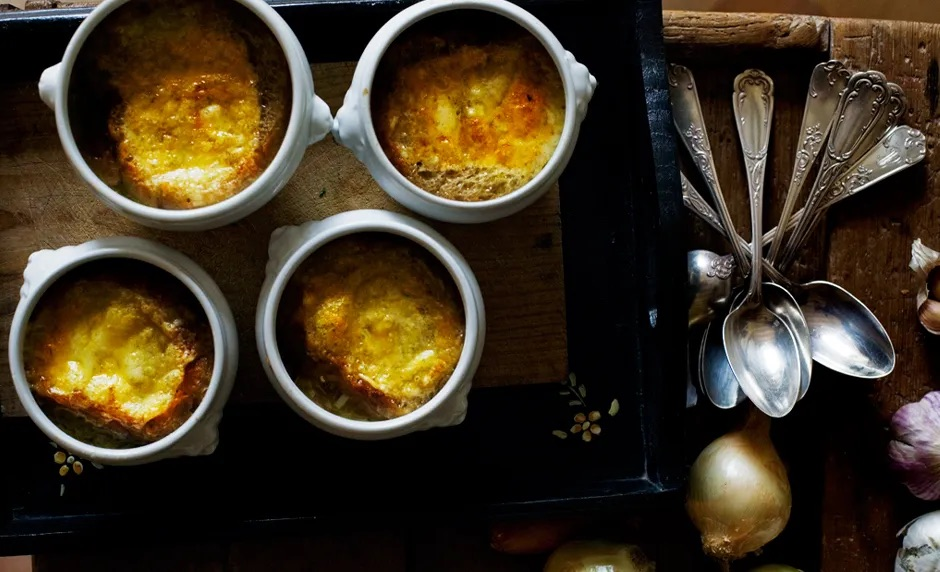

Description
Rich and savory french onion soup perfect for your next dinner.
Don't rush the browning of the onions—it's essential to the finished soup's flavor.
Ingredients
- 2 tablespoons unsalted butter
- 3 large white onions
- 1 large shallot
- 1 garlic clove
- Kosher salt and freshly ground black pepper
- 1⁄4 cup dry vermouth
- 1⁄2 tablespoon white wine vinegar
- 2 sprig flat-leaf parsley
- 1 sprig thyme
- 1 bay leaf
- 4 cups low-sodium beef broth
- 4 slices 1⁄4"-thick slices country-style bread, toasted
- 4 ounces sliced Comté cheese or Gruyere
Steps
- Heat butter in a large heavy pot over medium-high heat. Add onions, shallots, and garlic; season with salt and pepper and cook, stirring occasionally, until softened and dark brown, 60-70 minutes. Add vermouth and vinegar. Bring to a boil, reduce heat, and simmer until slightly reduced, about 3 minutes
- Tie parsley, thyme, and bay leaf with kitchen twine; add to pot along with broth. Bring to a boil, reduce heat, and simmer, stirring occasionally, until reduced to about 8 cups, 35-40 minutes; discard herb bundle.
- Preheat oven to 450°. Place ovenproof bowls on a large rimmed baking sheet. Divide soup among bowls and top with toasts (cut to fit if necessary) and cheese. Bake until cheese is bubbling and golden brown, 6-8 minutes.